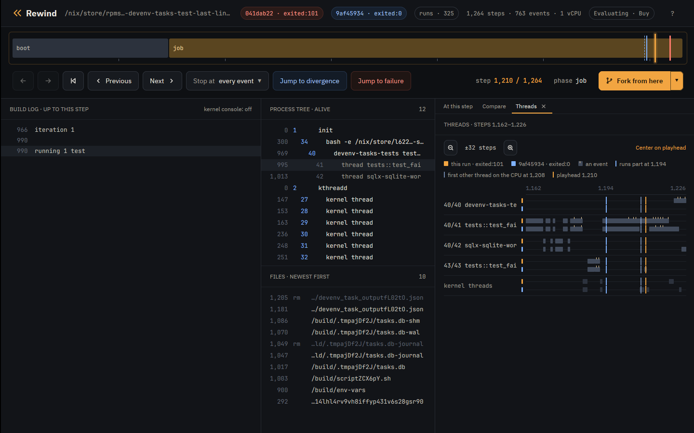

Case study
Case study: lost task output in devenv
devenv could drop the last lines a task printed. This is a
known bug, reported in
cachix/devenv#2281 and fixed by
the maintainer in
cachix/devenv#2296. Rewind VM
reproduced it, gdb in the VM shows tokio::select! taking the child's exit with
a line still buffered, and the fix passes every schedule.
The code
devenv-tasks runs each task as a child process and reads its output a line at
a time in one tokio::select! loop (task_state.rs at 1.10.1):
loop {
tokio::select! {
result = stdout_reader.next_line(), if !stdout_closed => {
match result {
Ok(Some(line)) => {
...
stdout_lines.push((std::time::Instant::now(), line));
},
Ok(None) => {
stdout_closed = true;
},
...
}
}
result = stderr_reader.next_line(), if !stderr_closed => {
...
}
result = child.wait() => {
match result {
Ok(status) => {
...
if status.success() {
return Ok(TaskCompleted::Success(now.elapsed(), Self::get_outputs(&outputs_file).await));
} else {
return Ok(TaskCompleted::Failed(
now.elapsed(),
TaskFailure {
stdout: stdout_lines,
stderr: stderr_lines,
error: format!("Task exited with status: {status}"),
},
));
}
},
When the child.wait() branch runs, the function returns with the lines it has
so far.
The test
The derivation adds one test to devenv-tasks' unit tests and runs only that
test (flake):
#[tokio::test]
async fn test_failed_task_keeps_last_lines() -> Result<(), Error> {
let temp_dir = TempDir::new().unwrap();
let db_path = temp_dir.path().join("tasks.db");
let script = create_script("#!/bin/sh\necho line1\necho line2\necho line3\nexit 1\n")?;
let tasks = Tasks::builder(
Config::try_from(json!({
"roots": ["myapp:task_1"],
"run_mode": "all",
"tasks": [{ "name": "myapp:task_1", "command": script.to_str().unwrap() }]
}))
.unwrap(),
VerbosityLevel::Verbose,
Shutdown::new(),
)
.with_db_path(db_path)
.build()
.await?;
tasks.run().await;
match inspect_tasks(&tasks).await.as_slice() {
[(_, TaskStatus::Completed(TaskCompleted::Failed(_, failure)))] => {
let lines: Vec<&str> = failure.stdout.iter().map(|(_, l)| l.as_str()).collect();
assert_eq!(lines, vec!["line1", "line2", "line3"]);
}
other => panic!("unexpected task statuses: {other:?}"),
}
Ok(())
}Run it
tokio::select! takes its branch order from the VM's randomness, which
--seed sets. Seed 5 fails on the first run:
$ rewind nix --seed 5 'github:fzakaria/rewindvm?dir=examples/case-studies#devenv-last-lines-before-2296'
rewind: packing 57 store paths for devenv-tasks-test-last-lines-before-2296
iteration 1
running 1 test
test tests::test_failed_task_keeps_last_lines ... FAILED
failures:
---- tests::test_failed_task_keeps_last_lines stdout ----
[myapp:task_1] line1
[myapp:task_1] line2
thread 'tests::test_failed_task_keeps_last_lines' (41) panicked at devenv-tasks/src/tests/mod.rs:3006:13:
assertion `left == right` failed
left: ["line1", "line2"]
right: ["line1", "line2", "line3"]
...
rewind: run 6544e96a1f5fd1a9 exited:101 after 1241 steps, 0.034s virtual, 0.342s wall (poweroff)
$ rewind replay 6544e96a
identical: 772 events over 1241 stepsThe task printed three lines and devenv kept two, as in the issue.
How often it fails
$ rewind check --seed 5 --all --schedules 256 'github:fzakaria/rewindvm?dir=examples/case-studies#devenv-last-lines-before-2296'
schedule 0: exited:101 1241 steps run 6544e96a1f5fd1a9
schedule 1: exited:101 1288 steps run ecb95645a75de3c2
schedule 2: exited:0 1382 steps 77ac62e2629d run 7e4a37b7d471985f
schedule 3: exited:101 1338 steps run c7068d6c5f13a7dd
...
schedule 256: exited:101 1352 steps run 5de3158c1d4279c3
schedule 0 failed; 39 of 256 perturbed schedules ended differently
schedule 2 passes where schedule 0 fails; narrowing the steps it perturbs
perturbing only steps 1132..1187 still ends differently
step 1186 decides it: a reschedule there makes the run pass
passing: run 6cae788ea403bb7d, schedule 2 over steps 1132..1187
failing: run a5e20f49f3dcee36, schedule 2 over steps 1132..1186
the two are the same run until step 1186
where /nix/store/195dbbvj5h0yq9f4vnp833dsbgxpp8w0-devenv-tasks-tests-1.10.1/bin/devenv-tasks-tests test_failed_task_keeps_last_lines first behaves differently:
both 1217 40/41 unlink("/build/.tmpGDEDU5/tasks.db")
both 1218 40/41 unlink("/build/.tmpGDEDU5")
both 1220 40/41 thread exit(tests::test_fai) exited:0
failing 1224 40/40 write(1, "FAILED")
failing 1225 40/40 write(1, "\n")
failing 1227 40/40 write(1, "\nfailures:\n")
failing 1228 40/40 write(1, "\n")
passing 1236 40/40 write(1, "ok")
passing 1237 40/40 write(1, "\n")
passing 1239 40/40 write(1, "\n")
passing 1240 40/40 write(1, "test result: ")
open both in the desktop app: rewind open a5e20f49f3dcee36 1224 --compare 6cae788ea403bb7d
218 of 257 runs fail, 215 of them with ["line1", "line2"] and 3 with
["line1"]. The two runs of the narrowed pair make the same calls, so the diff
shows only the test's result. What differs is when the task's shell gets the CPU.
Who had the CPU
rewind threads prints which thread held the CPU through each stretch of
steps, here for the failing run and then the passing one:
$ rewind threads a5e20f49f3dcee36 --from 1170 --to 1210
1170 1171 40/41 tests::test_fai
1172 1172 kernel 11 ksoftirqd/0
1173 1174 40/41 tests::test_fai
1175 1175 43/43 scriptfRH5PT.sh
1176 1176 kernel 11 ksoftirqd/0
1177 1179 40/41 tests::test_fai
1180 1181 kernel 11 ksoftirqd/0
1182 1187 43/43 scriptfRH5PT.sh
1188 1188 kernel 11 ksoftirqd/0
1189 1204 40/41 tests::test_fai
1205 1205 kernel 11 ksoftirqd/0
1206 1209 40/42 sqlx-sqlite-wor
1210 1210 kernel 11 ksoftirqd/0
$ rewind threads 6cae788ea403bb7d --from 1170 --to 1210
1170 1171 40/41 tests::test_fai
1172 1172 kernel 11 ksoftirqd/0
1173 1174 40/41 tests::test_fai
1175 1175 43/43 scriptfRH5PT.sh
1176 1176 kernel 11 ksoftirqd/0
1177 1179 40/41 tests::test_fai
1180 1181 kernel 11 ksoftirqd/0
1182 1187 43/43 scriptfRH5PT.sh
1188 1188 kernel 11 ksoftirqd/0
1189 1202 40/41 tests::test_fai
1203 1203 43/43 scriptfRH5PT.sh
1204 1204 kernel 11 ksoftirqd/0
1205 1210 40/41 tests::test_faiIn the failing run the shell (43) finishes exiting before thread 41 runs. In the passing run the reschedule at step 1186 sends the shell off the CPU before its exit is done, and it finishes only at 1203. The app's Threads tab shows the same:

Perturbing only from step 1163, where the run forks the task's shell, gives about the same pass rate, so the outcome is decided after the task starts:
$ rewind check --run 6544e96a --schedule-from 1163 --schedules 64 --all --no-narrow
schedule 0: exited:101 1241 steps run 6544e96a1f5fd1a9
schedule 1: exited:101 1255 steps run c3335161d19a3e8d
schedule 2: exited:101 1283 steps run 70026aba5943a7b5
schedule 3: exited:101 1267 steps run c480b419033090dd
...
schedule 64: exited:101 1256 steps run 2db3efabd1dea387
run 6544e96a1f5fd1a9 failed; 9 of 64 perturbed schedules ended differentlyWhere the third line went
The events of schedule 0's run around the task:
$ rewind events 6544e96a --from 1155 --to 1175
1160 40/41 open("/build/devenv_task_outputsohcU0.json", 0o2000302)
1163 40/41 fork() = 43
1167 43/43 execve("/build/scriptfRH5PT.sh", ["/bin/sh", "/build/scriptfRH5PT.sh"])
1168 43/43 exit_group(scriptfRH5PT.sh) exited:1
1171 40/41 SIGCHLD code=1 addr=0x0
The shell prints all three lines and exits before the loop reads anything.
rewind gdb opens gdb on a fork of the run at a step. Break on
read of the stdout pipe (fd 13) and on the child.wait() branch:

-
The timeline
Step 1,166 of 1,234, four steps after the run left the passing one.
-
Build log
The test has started and nothing from the task is in the log. Its three lines are in the pipe, unread.
-
At this step
SIGCHLD reaches thread 41 of the test process: the task's shell has exited.
-
Divergence
The run left ce9c7563 at step 1,162, where the shell starts the task's script.
$ rewind gdb 6544e96a 1160 -- -batch -ex 'break read if $rdi == 13' -ex 'break task_state.rs:409' -ex continue -ex 'set $buf = $rsi' -ex finish -ex 'x/s $buf' -ex 'delete 1' -ex continue
rewind: step 1160 ran in process 40; loading symbols for 5 of its files
rewind: source files for /nix/store/195dbbvj5h0yq9f4vnp833dsbgxpp8w0-devenv-tasks-tests-1.10.1 from /nix/store/hs2328bm8f7s0cq77jjjgdlcqrc13mhm-source
rewind: gdb at step 1160 of 6544e96a1f5fd1a9
arch_local_irq_restore (flags=514) at ./arch/x86/include/asm/irqflags.h:146
146 return !(flags & X86_EFLAGS_IF);
[Switching to thread 3 (Thread 1.41)]
#0 __syscall_cancel_arch () at ../sysdeps/unix/sysv/linux/x86_64/syscall_cancel.S:56
56 ret
Breakpoint 1 at 0x7ff64601f190: file ../sysdeps/unix/sysv/linux/read.c, line 25.
Breakpoint 2 at 0x55dd6284c8a7: task_state.rs:409. (2 locations)
Thread 3 hit Breakpoint 1, __GI___libc_read (fd=13, buf=0x7ff640015f20, nbytes=8192) at ../sysdeps/unix/sysv/linux/read.c:25
25 {
0x000055dd62b239bd in std::fs::{impl#9}::read (buf=Python Exception <class 'gdb.error'>: value has been optimized out
&mut [u8](size=8192), self=<optimized out>) at /rustc/48a229ceaefd4985c50990b14116b6d856af0985/library/std/src/fs.rs:1335
warning: 1335 /rustc/48a229ceaefd4985c50990b14116b6d856af0985/library/std/src/fs.rs: No such file or directory
Value returned is $1 = 18
0x7ff640015f20: "line1\nline2\nline3\n"
Thread 3 hit Breakpoint 2.1, devenv_tasks::task_state::{impl#1}::run::{async_fn#0}::{async_block#0}::{async_block#0} () at devenv-tasks/src/task_state.rs:415
415 let expanded_paths = expand_glob_patterns(&self.task.exec_if_modified);
[Inferior 1 (process 1) detached]
One read returns all three lines into the BufReader. The loop takes two of
them, then takes the child.wait() branch with line3 still
buffered, and returns.
Root cause
Without biased;, tokio::select! polls its branches in a random
order on each pass. Once the child has exited, child.wait() is ready on every
pass, and so is each buffered line. Each pass is a draw between "take the next line" and
"return now", and any line still buffered when child.wait() wins is lost.
The window opens when the exit is visible before the output is read. On one CPU the shell
often runs from execve to exit without giving up the CPU, so the
output and the exit are waiting together when the loop starts.
The fix, checked
The fix (de0dc6a8) stores the exit status, turns the child.wait() branch off, and keeps
reading until both pipes are closed:
loop {
+ // If child has exited and both pipes are closed, we're done
+ if exit_status.is_some() && stdout_closed && stderr_closed {
+ break;
+ }
+
tokio::select! {
...
- result = child.wait() => {
+ result = child.wait(), if exit_status.is_none() => {
...
- if status.success() {
- return Ok(TaskCompleted::Success(now.elapsed(), Self::get_outputs(&outputs_file).await));
- } else {
- ...
- }
+ // Store exit status and continue draining pipes
+ exit_status = Some(status);The same test at the merge commit passes every schedule:
$ rewind check --seed 5 --all --schedules 256 'github:fzakaria/rewindvm?dir=examples/case-studies#devenv-last-lines-2296'
rewind: packing 57 store paths for devenv-tasks-test-last-lines-2296
schedule 0: exited:0 1265 steps 77ac62e2629d run 3a63d6f3fb4609e6
schedule 1: exited:0 1328 steps 77ac62e2629d run f4e0ee9226d42c85
schedule 2: exited:0 1382 steps 77ac62e2629d run 8c0642d5e58dd52d
...
0 of 256 perturbed schedules ended differently
same result under all 257 schedulesOn the host the unfixed test passed 1000 of 1000 runs on 16 CPUs, and 1000 of 1000 pinned to one CPU.
The recording
Both files are in the case-studies release:
-
devenv-task-output-race.rwd
(10.1 KB), the trace, for
rewind events,rewind logand the app. -
devenv-task-output-race-replayable.rwd
(185.1 MB), with the kernel, input image and keyframes, for
rewind replay,rewind gdbandrewind shell.
$ rewind import https://github.com/fzakaria/rewindvm/releases/download/case-studies/devenv-task-output-race-replayable.rwd
$ rewind replay 6544e96a
$ rewind gdb 6544e96a 1160
$ rewind-app https://github.com/fzakaria/rewindvm/releases/download/case-studies/devenv-task-output-race.rwdThe engine is free and MIT licensed. The desktop app is $49 personal or $99 per seat.